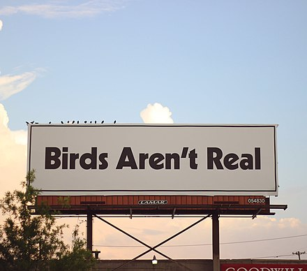

Life Simulator: Birds Aren't Real Edition - Home
While it is recommended that you read the entirety of the original website (found here), here is a quick summary: Birds Aren't Real is a conspiracy theory based movement that argues the fact that birds no longer exist and have all been replaced by thousands of surveillance drones in order to spy on the general public within the United States of America. While some take it much more seriously than others, it has been described by journalist Rachel Roberts as "a joke that thousands of people are in on." in 2018 according to Wikipedia. In some instances, people even relate bird fecal matter on their cars to tracking devices that record the where-abouts of the driver.

The point in this simulator is a comical approach to display a day in the life of a human being monitored by a government bird. There are different choices throughout the simulation which will lead to one of many different endings. Feel free to play over and over again to discover all possible outcomes of the day. Enjoy!
Start Here
Table Of Contents
Sources